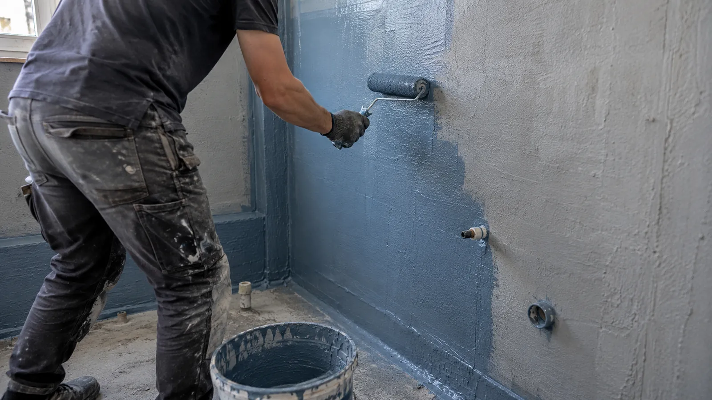

Waterproofing Adelaide
Waterproofing Adelaide
Ellis Services Group provides waterproofing services for Adelaide bathrooms, laundries, balconies, roofs, kitchens, pools and external surfaces. Send the work area, current condition and required finish in your enquiry.

Ellis Services Group repairs leaks and installs waterproofing for Adelaide homes, from shower recesses and laundry floors to balconies, roofs and pools. We assess the damaged area and provide the preparation, membrane work and finished-surface repairs required.
Our waterproofing service covers on-site assessment, surface preparation, junction detailing, membrane installation and coordinated tiling. We set out the work and materials in your written quote before installation.
For apartments and units, we coordinate the work around access, shared drainage and building approval requirements. For shower repairs and bathroom renovations, view our bathroom waterproofing in Adelaide.
Wet-area waterproofing for moisture-exposed surfaces
We waterproof bathrooms, laundries and exterior surfaces, tailoring preparation and installation to the work area. The examples below show common issues we assess and repair.
| Wet area | Typical signs | Usual trigger |
|---|---|---|
| Bathroom / ensuite | Crumbling grout, lifted silicone, musty smell, staining below | Renovation, or age-related membrane failure |
| Shower recess | Water at the hob, staining on adjoining walls, damp outside the screen | Failed junctions or a membrane at end of life |
| Laundry | Swollen skirting or cabinetry, damp at the floor and wall junction | Standing water, appliance leaks, no falls to waste |
| Balcony / upper deck | Drips to the unit below, rust staining, tiles lifting at edges | Movement at the substrate, blocked drainage, aged membrane |
Shower leak assessment and bathroom membrane repairs
We provide professional bathroom waterproofing for shower areas, wet areas and bathroom surfaces. Ellis Services Group assesses the current room condition and completes the waterproofing work required before the tiled finish. For this specific service, see bathroom waterproofing Adelaide.
Shower recesses
We assess shower thresholds, internal corners, wall–floor junctions and the floor waste, then repair the affected waterproofing and surfaces. Our team checks adjoining areas where moisture or staining is visible.
Laundry floor waterproofing and floor–wall junctions
We waterproof laundry floors, wall junctions and wet-area surfaces around appliances and fixtures. We inspect the laundry surfaces and drainage on site, take the measurements needed and confirm the waterproofing work and written quote.
Our laundry service includes preparing moisture-exposed floors and wall junctions, checking drainage falls and installing the specified waterproofing before the finished surface.
Roof waterproofing repairs for damaged surfaces and junctions
Ellis Services Group provides professional roof waterproofing for roof surfaces, junctions and penetrations. We assess the roof damage, exposed areas and water-entry points, then carry out the repair work required.
Kitchen waterproofing for moisture-exposed walls and floors
We provide kitchen waterproofing for moisture-exposed walls, floors and wet areas. Our service is coordinated with cabinetry, appliances and the final kitchen surface work.
Pool waterproofing and compatible surface systems
We provide pool waterproofing and pool-surround surface work, including preparation, junction detailing and systems compatible with the selected finish. We assess the pool area and damage, then confirm the installation or repair scope.
External wall waterproofing and exposed junction repairs
We waterproof external walls and repair exposed edges, corners and junctions. Our team assesses the surface damage and water-entry points, prepares the affected base and applies the specified protective system.
Balcony water ingress, thresholds and exterior membranes
We provide balcony waterproofing, membrane renewal and exterior surface repairs. We assess drainage, thresholds, edges and existing damage, then carry out the preparation and waterproofing work required.
Our balcony service coordinates drainage details, movement joints, weather-exposed surfaces and the tiled finish. For apartments, we plan access and the work sequence around the building’s requirements.
Waterproofing repairs for leaks, damp and lifting tiles
Book an assessment if you notice any of these issues. We inspect the affected area and establish the repair required:
- Grout that keeps crumbling or powdering after repeated re-grouting.
- Silicone that repeatedly lifts or peels away at junctions.
- Efflorescence — white, powdery deposits along grout lines.
- A musty or damp smell that does not clear with ventilation.
- Staining, bubbling paint or swollen plaster on a ceiling or wall below.
- Skirting boards or adjacent cabinetry that have swollen or discoloured.
- Tiles that sound hollow over a widening area, or that start to lift.
Leave investigation of concealed or elevated areas to our team. Do not remove tiles, cut into walls or climb onto a roof to investigate; contact Ellis to arrange a safe on-site assessment.
Localised membrane repairs or waterproofing renewal
Localised joint or silicone failure
Ellis Services Group inspects the affected joints, silicone and surrounding surfaces on site. If the assessment identifies a local joint fault, we confirm the targeted repair and quote for that area.
Recurrent leaks in the same spot
For a leak that returns after joint repairs, Ellis Services Group checks the seals, membrane, drainage and adjoining surfaces on site. We identify the water-entry cause and confirm the repair plan and quote.
Signs the substrate is affected
We inspect swollen plaster, lifting tiles and moisture-affected floors, then set out any removal and substrate repair needed before renewing the waterproofing and finish.
Book a waterproofing repair assessment. Tell us what you can see from a safe position. We inspect the area on site, identify the water-entry cause and confirm whether a local repair or waterproofing renewal is needed. Get your waterproofing quote →
Membrane curing, protection and tiling handover
Membrane curing and readiness checks before tiling
We allow the selected membrane to cure and complete the inspections or testing specified for the project before tiling. Our team coordinates these checks and protects the membrane during the next stage; do not fill a suspect wet area yourself to test it.
Handing over to tiling
Ellis coordinates waterproofing and tile installation as one service, using compatible preparation, adhesives and junction details. We confirm curing and the required checks before completing the tiled finish.
Professional waterproofing, from preparation to handover
Ellis Services Group prepares the surface, details junctions and penetrations, and installs the waterproofing system suited to the project. We coordinate drainage and the finished surface to deliver a complete waterproofing service for your Adelaide property.
Your written quote confirms preparation, materials, installation and the required checks. At handover, we explain the completed work and provide care and return-to-use instructions for the installed system.
Request your waterproofing assessment and quote →
Waterproofing FAQs
Is waterproofing required before tiling a wet area?
We install the specified wet-area waterproofing before the tiled finish, with surface preparation, drainage and junction details coordinated as part of the service. Tiles and grout alone do not provide the waterproofing layer.
How long does a waterproofing membrane last?
We assess the accessible membrane, substrate and moisture-affected surfaces, then recommend the preparation or renewal needed for the property. The installed system, site conditions and use determine maintenance and service life.
Can waterproofing be done without removing tiles?
Ellis Services Group checks the tiled surface, joints and substrate on site. We confirm whether a local repair suits the findings and identify any tile removal required in the repair plan and written quote.
What do you provide at waterproofing handover?
We explain the completed waterproofing work and provide care, curing and return-to-use instructions for the installed materials. Your agreed scope and handover records identify the work delivered.
Waterproofing and tiling, delivered as one service plan
We coordinate waterproofing with the final wall and floor finish. Our tiling services complete the finished-surface work for bathrooms, kitchens and other Adelaide spaces.
Book a waterproofing service
Send your Adelaide suburb and a short description through our enquiry form. We arrange an on-site assessment, investigate any water-entry problem and confirm the waterproofing scope and written quote.
You can check Adelaide service areas before getting in touch.
Ellis Services Group waterproofing
For waterproofing across Adelaide, call Ellis Services Group. We assess the space, surface condition and repair requirements, then deliver the waterproofing work your property needs.
Contact Ellis Services Group 24/7 to arrange an on-site assessment. Our team checks the affected area, identifies the cause and confirms the work scope, written quote and appointment.
Phone: 0425 170 688
Address: 63 Pirie St, Adelaide SA 5000
CALL 0425 170 688 SEND AN ENQUIRY
Or contact Ellis Services Group in Adelaide directly. You can also see all Adelaide services, and there is more detail on our common questions page.